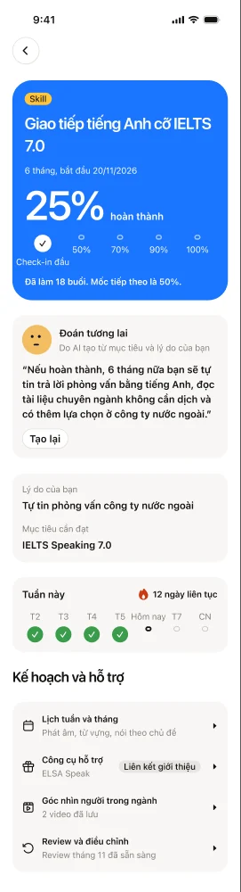

Dự án 03 | Case study cá nhân
Giúp người trẻ đi làm lập và giữ kế hoạch 1 năm
Đi trọn quy trình từ phỏng vấn người dùng, insight, How Might We đến user flow, IA, wireframe, mascot và UI.



Nghiên cứu
Phỏng vấn 3 người trẻ đi làm
2 nhân viên văn phòng (thu nhập dưới 12 triệu và 12–18 triệu) và 1 nhân viên học việc spa. Ghi chú được nhóm thành 4 cụm:
- Áp lực kinh tế của bản thân đến từ áp lực gia đình.
- Quyết định mọi việc dựa trên tài chính.
- Muốn phát triển chuyên môn cho công việc hiện tại.
- Ít có kế hoạch cho tương lai xa hơn.
Một chi tiết đáng nhớ: 2 trong 3 người tìm đến xem tử vi, bói toán online (có người dùng ChatGPT) để thấy yên tâm hơn về tương lai.
Insight | HMW
Muốn phát triển nhưng thiếu mục tiêu rõ ràng
- Người trẻ muốn bồi dưỡng kiến thức, kỹ năng để phát triển nhưng không có mục tiêu và kế hoạch rõ ràng.
- Người trẻ ưu tiên quyết định thiên về tiền bạc vì áp lực kinh tế lớn nhất đến từ gia đình.
Từ 4 câu How Might We, câu được chọn: "Làm thế nào để người trẻ có thể lên kế hoạch dài hạn một cách nhanh chóng, dễ dàng và linh hoạt điều chỉnh?"
Giải pháp
Vì sao chọn mục tiêu 1 năm
Tôi cân nhắc 5 hướng: fanpage tư vấn, diễn đàn chia sẻ cách lập kế hoạch, app AI "Future me" dự đoán tương lai, app "bạn đồng hành" ghép người cùng mục tiêu, và app lập mục tiêu 1 năm. Hướng được chọn là ứng dụng giúp người dùng liệt kê và xác định mục tiêu 1 năm, nhắc review tiến độ và xem những gì đã thay đổi so với kế hoạch ban đầu.
Lý do: app hướng tới người trẻ mới bắt đầu hình thành thói quen và theo đuổi mục tiêu ngắn hạn. Mục tiêu 1 năm đủ gần để người dùng theo được và quay lại app; mục tiêu nhiều năm thì khó duy trì và quá phức tạp để app hỗ trợ.
Đo lường
Chưa kiểm thử: kế hoạch đo tiếp theo
- Usability test với 5 người trẻ đi làm: có tự tạo được mục tiêu 1 năm và chia nhỏ thành việc hằng tuần không, kẹt ở bước nào.
- Tỷ lệ hoàn thành tạo mục tiêu đầu tiên trong lần mở app đầu.
- Tỷ lệ quay lại cập nhật tiến độ sau 7 và 30 ngày, vì insight chính là người trẻ khó duy trì mục tiêu dài.
Dự án tiếp theo